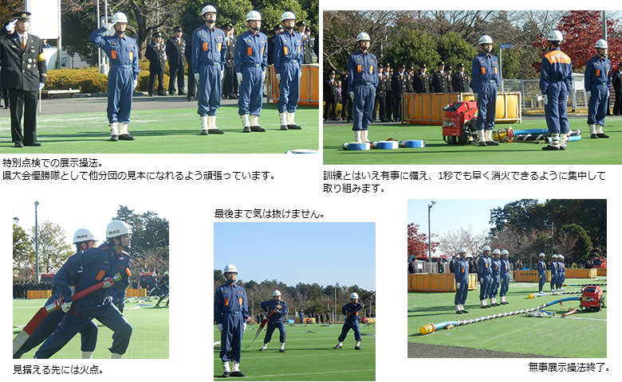
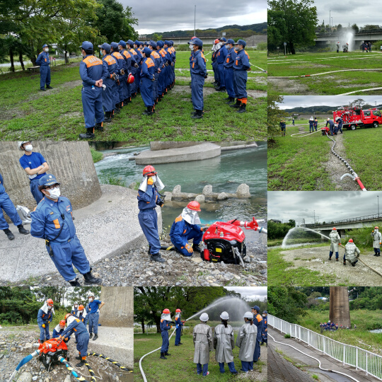
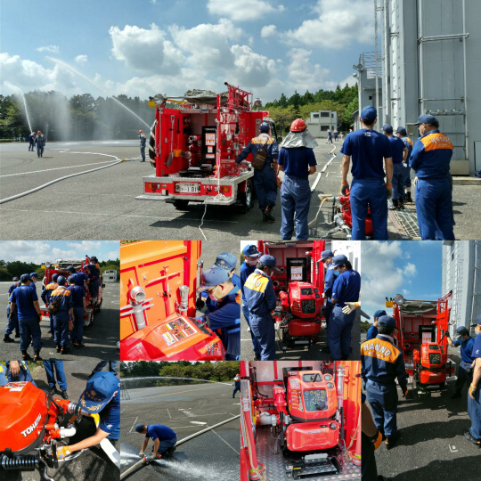
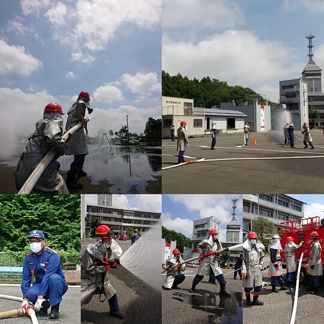
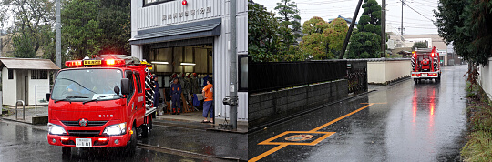
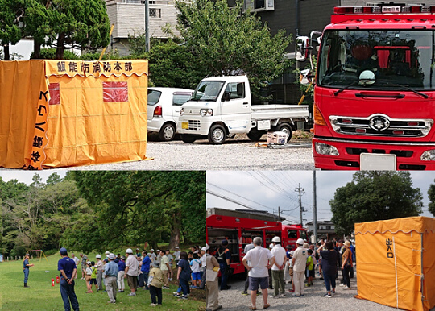
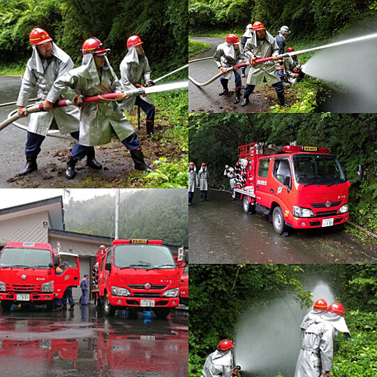
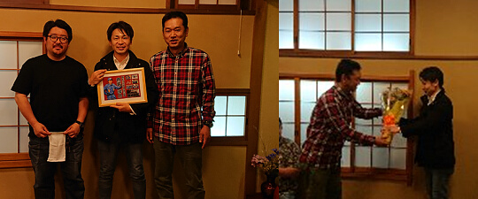
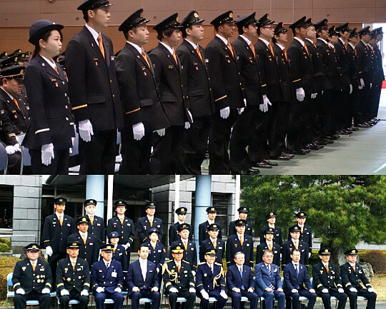

第1分団

令和2年度トピックス
◆2020年9月13日（日）1分団・6分団合同中継送水訓練あいわ広場にて、1分団と6分団合同の中継送水訓練を行いました。あいわ橋を通る市民の方が、足を止めて訓練の様子をご覧になっていました。

◆2020年8月30日（日）分団訓練（放水訓練）
飯能日高消防署にて、放水訓練を行いました。今回は、小型ポンプを積載車から降ろす訓練を中心に、放水訓練を行いました。

◆2020年7月19日（日）分団訓練（放水訓練）
飯能日高消防署にて、放水訓練を行いました。ホース・筒先班（放水班）、機関員班（積載車側でポンプを操作する班）、サポート班の3班体制でローテーションを行い、それぞれの役割、操作方法等を確認しながら、訓練を行いました。

令和元年度トピックス
◆2019年10月12日（土）台風・警戒今年は大きい台風が多く19号上陸時は、警戒・広報活動を行いました。

◆2019年8月18日（日）中山自主防災訓練
中山自治会、自主防災訓練が行われました。水消火器訓練、救命訓練、煙体験、炊き出し等行われました。

◆2019年7月7日（日） 中継送水訓練
1,3,9分団合同で中継送水訓練を東吾野小及び付近の林道で行われました。あいにくの、雨でしたが、半日訓練が行われました。

◆2019年4月20日（土）歓送迎会
退団1名、新入団2名（新入1名内定者1名）の歓送迎会を行われました。退団者には、記念品、花束が贈られ、入団者には歓迎式が行われました。

◆2019年4月14日（日）飯能消防団入団式
飯能日高消防署にて平成31年度飯能消防団入団式が行われました。本年も地域の安心、安全、皆様に愛される消防として活動していきます。
